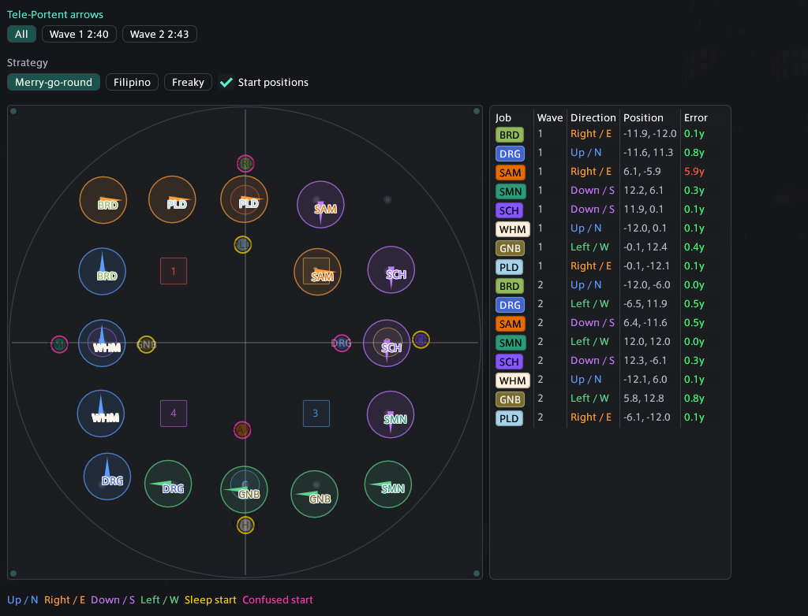
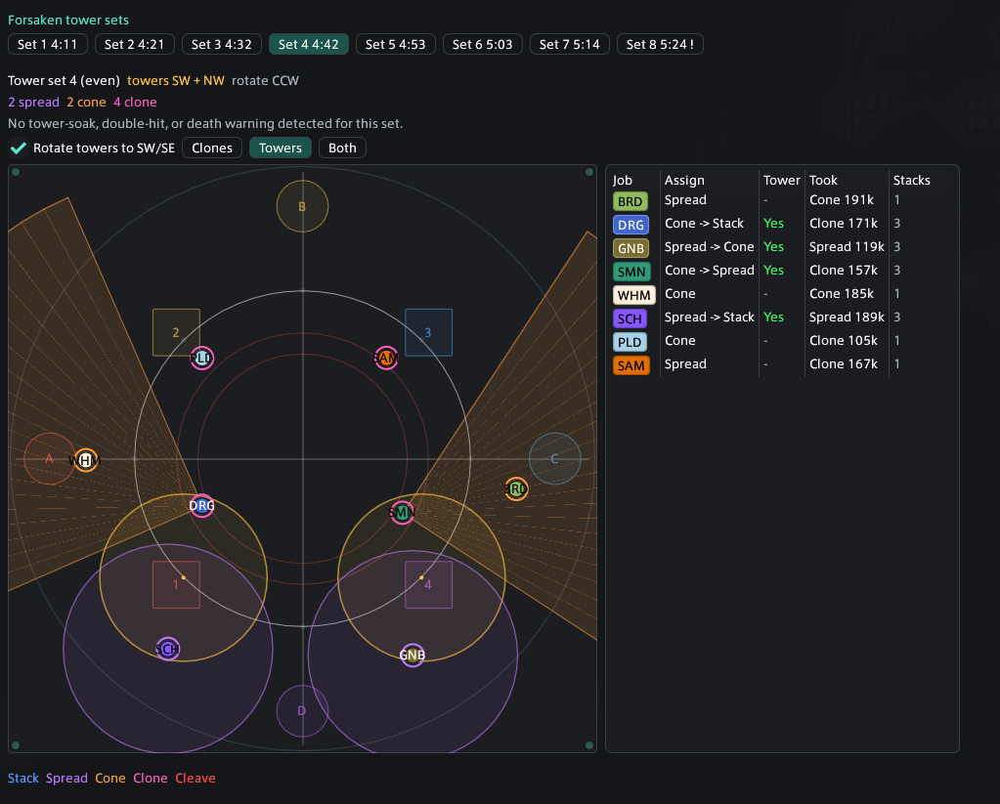
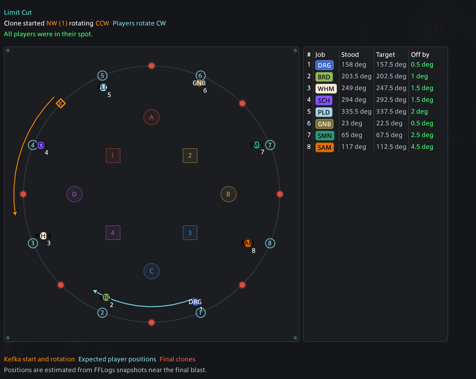
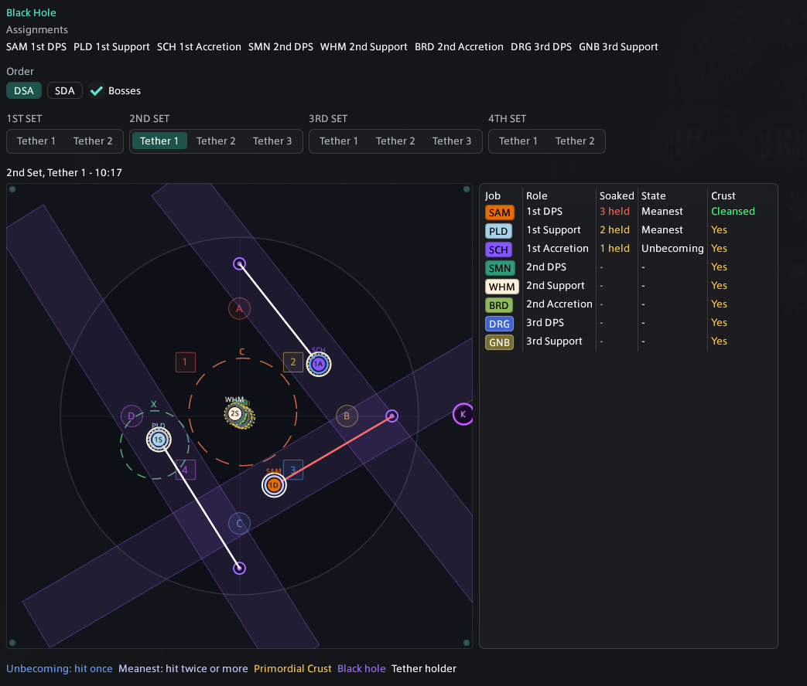
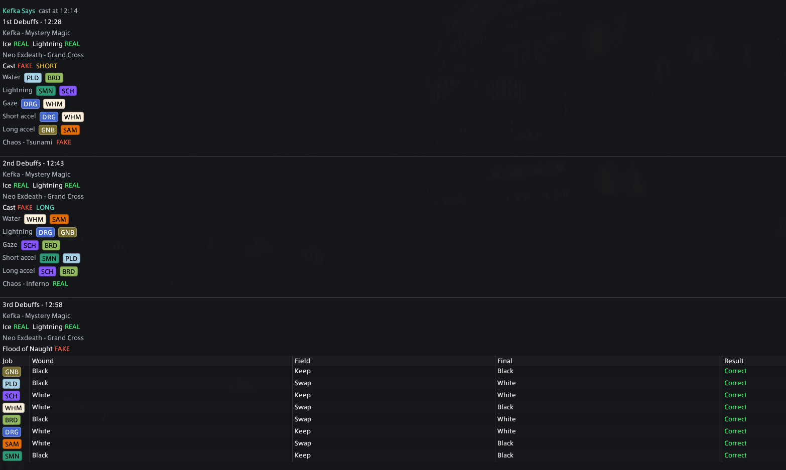

Analyze what Better Deaths recorded
Choose an eligible saved pull. Newly completed pulls become available without restarting the plugin.
Analyzer
The built-in analyzer ports Mczub's WTF.DIG mechanic analysis into a dedicated Better Deaths tab.
Choose an eligible saved pull. Newly completed pulls become available without restarting the plugin.
Paste a complete FFLogs report link or a link to a specific fight. The report reference is sent to WTF.DIG's service, which retrieves the requested log from FFLogs.
Better Deaths Pull reads an eligible saved DMU pull. FFLogs Link accepts a full report or a specific fight link.
Only pulls that reached the selected mechanic are eligible. FFLogs results can be stepped backward or forward between matching fights.
Use 12y Diamond or DN/Zenith to match the party's layout. Kefka Says does not use the arena-waymark selector.
Recorded mechanic data means the local pull contains direct mechanic evidence. Estimated timing from nearby fight data marks a fallback.
The map shows placement; the table provides exact assignments, states, errors, or warnings. Drag a map corner to resize it. The size is remembered.
Open this moment in Replay is available for local pulls and jumps the full replay to just before the currently selected mechanic view.
Show every arrow wave together or inspect one wave at a time. Choose Merry-go-round, Filipino, or Freaky strategy to change the expected slots, and toggle start positions. The map color-codes arrow direction and start debuffs; the table compares wave, direction, actual position, expected slot, and distance error.

Step through raidwides and tower sets. The summary shows parity, active tower pair, rotation, effect counts, missed two-person soaks, double hits, and deaths. Rotate towers to SW/SE for a consistent view; toggle the cleave snapshot; switch between Clones, Towers, or Both. The player table shows assignment, tower soak, effects taken, and Trouble stacks. Select a clone cleave on the arena to inspect its bait direction.

Shows Kefka's starting clone and rotation, the players' rotation, numbered assignments, actual and expected positions, angle error, deaths, and unverified players. Orange guidance belongs to Kefka; cyan guidance belongs to the player rotation.

Shows party assignments, DSA or SDA ordering, optional boss hitboxes, and each tether grouped under its set. Warning marks identify deaths or too many soaks. The arena shows beams, tether holder, hit players, bosses, black holes, and captured positions; the table tracks soak count, Nothing state, cleanse state, and Primordial Crust.

Shows every debuff round, real or fake Kefka and Neo Exdeath tells, short or long timing, affected jobs, Flood of Naught wound swaps, Chaos calls, deaths, and wipes. The resolution section separates short and long debuffs and follows the mechanic order, calls, and player groups.

This is a Dancing Mad mechanic analyzer, not a general analyzer for every duty. Position snapshots are estimates; use the original FFLogs report or recording as the final source of truth.